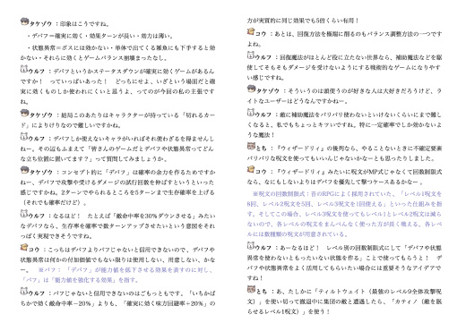

■2017-10-28 (土) 『ゲーム開発者の地図』発売！▼
ということで一部の方にはお待たせしました！
Kindleのゲーム開発本『ゲーム開発者の地図』がついに発売です！
購入ページはこちらから！
↓
【ゲーム開発者の地図 ～20年の個人開発から学んだこと～】
Amazonページ ￥1,080 （Unlimitedなら￥0）

【内容は？】
本書は、この開発日誌内に載せてきた「ゲーム開発記事」を
読みやすく加筆、修正、再編し、さらに全7人の
ゲーム開発者（※ほぼTRPGリプレイのメンツです）による、
内容へのツッコミコメントを追加したものとなっております。
主なテーマは以下の通り！
-------------
◆第1章 ゲームバランス編
・「3ターン与えるダメージを1.3倍」にする補助魔法、使う？
・バランスが崩れやすい要素×3
・ゲームプレイの技量をレベルアップしてもらいたい！
・コラム 状態異常の話
・どんな武装が好み？
・好みの武装 コメント編
◆第2章 メイキング編
・初RPG制作で意図したこと 前･後編
・キャラクター作りで意識すること 前･後編
・私のゲームタイトルの付け方
・これまで作ったゲームタイトルを振り返る
・コラム ゲーム開発における小粒な話
・ゲームを完成させる作り方
・楽しくてレベルアップが早いゲームの作り方
・ゲーム開発中の悩みを解消するために試していること
・座談会 永遠に遊べるゲームがあるとしたら？
-------------
ゲームバランスに関わる話や開発そのものに関わる話など
およそ15個くらいの項目が用意されています。
本文に関してはあくまで私個人の『最新の偏見』なので、
あまり鵜呑みにせず、「へーこんな考え方もあるのか」くらいに
受け取ってくださるのがいいと思っています。
【本文見本】（クリックで拡大）

【新たに追加されたコメントコーナー】
Kindle本で新たに追加されたコメントコーナーでは、
TRPGリプレイ時ほどではないにしろ似たテンションで
愉快にゲーム開発あるある話をしていたり、様々なプレイヤー観や、
ゲーム開発者特有の生々しい苦労話などにも触れていますので、
ゲーム開発者を目指す方にとってはいくらか参考になる話もあると思います。
【コメント見本 状態異常の話】（クリックで拡大）


全体の量は完成品からHTMLタグとスペースを全部抜くと26.2万文字くらいで、
『片道勇者開発記』とほぼ同じだと思います（Kindle相当460ページくらいでした）。
秒間30文字という速さで読んでも8700秒、すなわち2時間半近くかかる計算です。
【まだ買ってないけど中身が気になる人へ】
「このお値段じゃ買う気がしないけど中身は気になる」という方も、ご安心ください！
コメントコーナーを除いた「本文」の内容は、
この日誌の「開発日誌」タグを追っていけば一通り閲覧できます。
なのでざっくりとした中身が気になるという方がいらっしゃいましたら、
ぜひこちら↓からご覧ください。
【「開発日誌」タグの記事一覧】
（パッと見この記事と同じページが出ますが、
下へたどると前の記事が見られます。
2017年1月～7月頃までの記事に、収録されている
「本文」部分の内容がほぼ全てが含まれています）
【そもそもKindleって何？ どうやって見るの？】
KindleとはAmazonの電子書籍を読むためのデバイス、
あるいはアプリケーションです。
デバイス持ってる人はたぶん少数なので、
ここではアプリケーション版の話をします。
すごく簡単に言うと、Kindle本はAmazonのアカウントを持ってる人が
Kindleアプリをインストールすれば読めるようになります。
KindleアプリにはWindows版もスマホ版もあるので、
『ゲーム開発者の地図』はパソコンでもスマホでも
お好きな方法で読んでいただくことが可能です。
それぞれのダウンロードページは以下の通り！
【Windows版 Kindleダウンロードページ】
【Android版 Kindleダウンロードページ】
【iOS版（iPhone他） Kindleダウンロードページ】
Kindleアプリを開くとAmazonのアカウントにログインするよう求められます。
ログインして、AmazonでKindle書籍を買っていれば、
買った一覧が表示されるので、そこから書籍をダウンロードして閲覧することができます。
特にスマホ版は通勤通学時にも読めるようになるので、私もよくお世話になっています。
Kindle本『ゲーム開発者の地図』の方では、過去記事の読みにくかった部分を
読みやすくなるよう書き直していたり、コメントコーナーが追加されていたりしているので、
この開発日誌を読み込んでくださった方でも
それなりにお得感はあるよう意識しています。
一冊にしてまとめて読みやすくしておきたい方や、
もっと掘り下げた話を見てみたい方は、よければぜひどうぞ。
【ゲーム開発者の地図 ～20年の個人開発から学んだこと～】
（Amazonページへ）
【本書をもぐらゲームスさんに紹介していただきました！】
もぐらゲームスさんにて『ゲーム開発者の地図』を紹介していただきました！
こちらにも記事ページの一部抜粋があるので、よければこちらもご覧ください。
http://www.moguragames.com/entry/map-of-game-developer/
(ｱｰｶｲﾌﾞ)
2017-10-28 (土)  カテゴリ: 開発日誌
カテゴリ: 開発日誌
 カテゴリ: 開発日誌
カテゴリ: 開発日誌